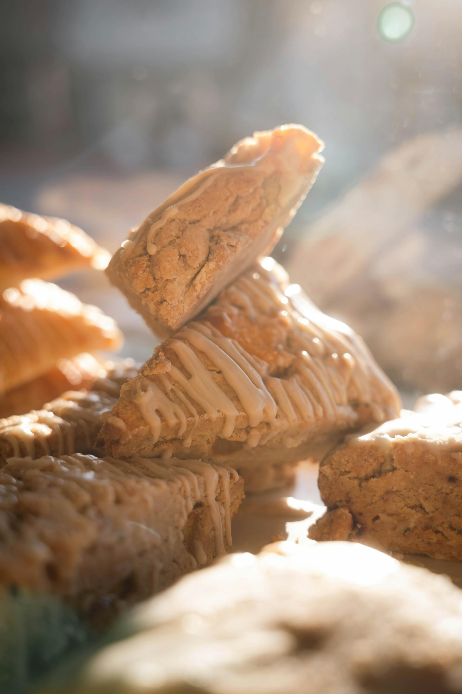
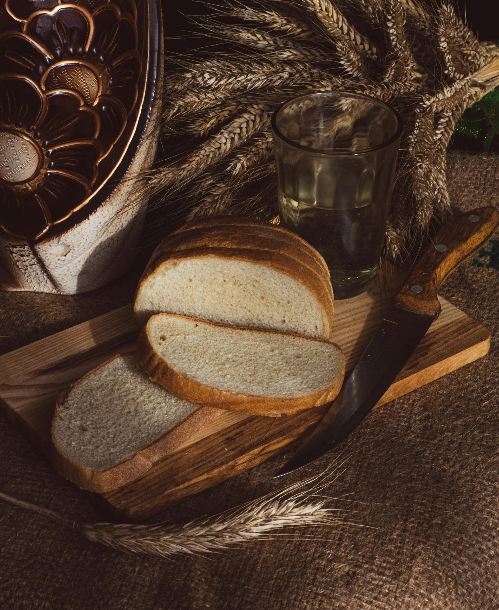
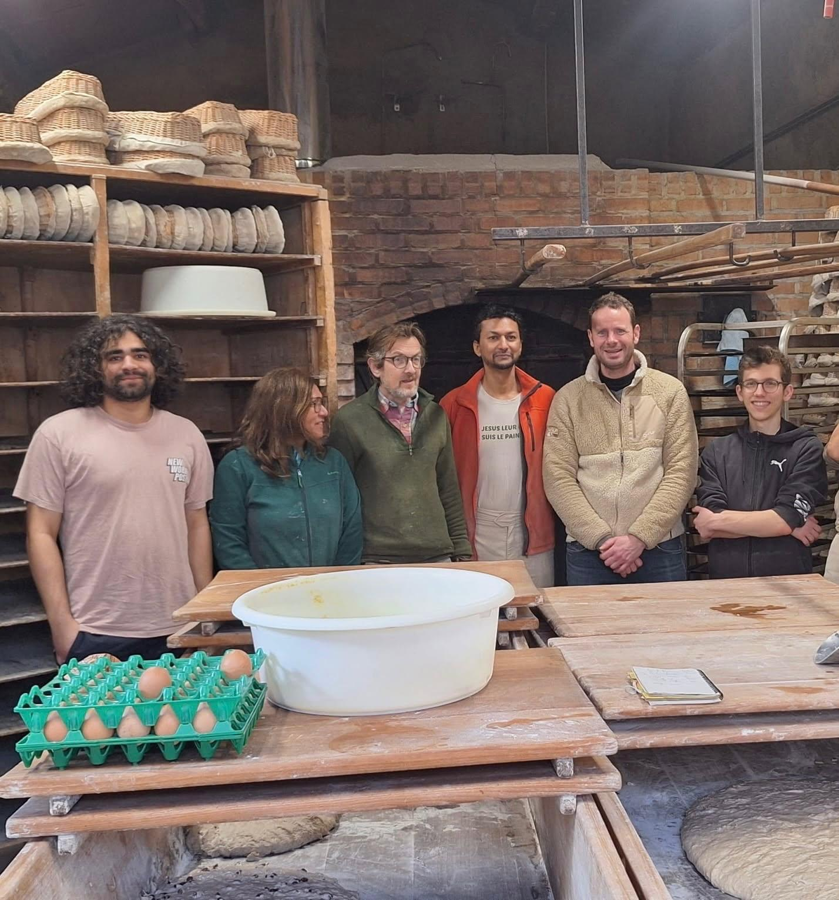

Nos services
Afin de vous offrir la meilleure expérience possible, nous mettons à votre disposition plusieurs services adaptés à vos besoins:
Tempor erat elitr rebum at clita. Diam dolor diam ipsum sit. Aliqu diam amet diam et eos. Clita erat ipsum et lorem et sit, sed stet lorem sit clita duo justo magna dolore erat amet


L’histoire de la boulangerie
La boulangerie voit le jour en avril 2003. Après quatre années d’expérience auprès de Paul Vernay, boulanger bio à Oingt et Civrieux-d’Azergues, mais aussi artisan de paix, Didier ouvre son premier fournil à Narbonne, hameau de Denicé. Les marchés de Belleville et Saint-Georges sont alors assurés à vélo, à l’aide d’une remorque principalement réalisée en bambou. La boulangerie porte alors le nom de L’Ami du Pain.
Après une première année très difficile sur le plan commercial — il faut du temps pour se faire connaître — la demande commence à croître dès 2004. Cette évolution conduit au déménagement en 2005 au Château de Bois Franc, dans des locaux plus spacieux. Dans la foulée, le marché de Jassans est créé et se tient tous les mercredis après-midi. Parallèlement, L’Ami du Pain livre douze magasins bio de Lyon les mardis et vendredis.
En 2007, le vélo et sa remorque laissent place à un vélo cargo à assistance électrique, permettant de poursuivre les livraisons lyonnaises entièrement à vélo, notamment le mardi. Face à une demande toujours plus forte, la boulangerie est alors scindée en deux structures : L’Ami du Pain, avec Didier, et Le Chemin du Pain, avec Ludovic. Cette association durera quatorze ans, jusqu’au départ à la retraite de Ludovic. C’est également en 2007 que naît le marché bio de Villefranche, organisé chaque samedi matin.
En 2009, l’achat de la maison de Blaceret permet à Didier d’y installer définitivement la boulangerie. Devant l’augmentation constante de la demande, une nouvelle solution s’impose : transmettre le savoir-faire. Le pétrissage manuel, l’utilisation exclusive de levain naturel et la cuisson au feu de bois sont des pratiques rares, peu enseignées dans les écoles de boulangerie, mais essentielles à la vitalité et à la qualité des pains. Former devient alors une évidence — une véritable déformation professionnelle.
Ainsi, entre 2009 et 2026, une trentaine de personnes ont bénéficié de cette formation, donnant naissance à une quinzaine de boulangeries artisanales. Parmi les plus proches, on retrouve Le Fournil des Vignes à Theizé et La Mie Joyeuse à Lacenas.
La fabrication de nos pains
Nous n’avons rien inventé, il y a deux siècles, tous les boulangers travaillaient ainsi. Nous pétrissons les farines (qui n’ont ni additifs, ni améliorants) à la main, nous aimons être dans le pétrin !
C’est avec du levain pur que commence la fermentation, au gré de la chaleur du fournil. Nous remettons la main à la pâte pour peser et façonner les pains dans des panières en vannerie locale.
Un four à gueulard, chauffé au bois local, permet de donner aux pains leur forme et leur couleur définitives.
Tous les ingrédients sont issus de l’ agriculture biologique. Notre meunier (GRIBORY à Châtelus, 03) écrase principalement sur meule de pierre Astrié, l’eau du réseau est purifiée par micro-filtration et dynamisation.
La laïcité de la France nous permet d’avouer que Shazia et Didier remettent leurs faits et gestes à Celui qui est le pain de vie : Jésus.
Nos pains
Nos douceurs
Notre équipe

Nous sommes une équipe passionnée de notre métier et
nous mettons tout en
œuvre pour vous offrir des produits de qualité.